Cette page montre ce qu'il en coûte de se servir de l'outil : le code réel que l'utilisateur écrit, et la sortie réelle que le moteur renvoie. Tout ce qui suit vient du mode allocation, celui qui gère un portefeuille, sa trésorerie et sa dette. Le mode investissement reprend cette comptabilité ; le mode algorithmique n'y accède que par la couche de sizing. Le moteur est livré avec une couche de validation, et un exemple de son usage figure plus bas.
Réserve fixe et dynamique, emprunt indexé sur un taux de marché réel, frais provisionnés sur une horloge et payés sur une autre, commission de surperformance avec high-water mark, et des réserves qui ne sont pas dans la devise du book. Une seule déclaration.
Sur les devises, le décompte mérite d'être explicite, parce que la spec n'en montre
que trois. Le CurrencySpec en déclare trois : USD pour le book et le
cash gagné, CHF pour la réserve fixe, EUR pour la réserve dynamique et le vault. La
quatrième entre par le book lui-même, dont une des cinq jambes est GBP/USD.
Les actifs portent "USD" dans les bindings parce que le book est exprimé en
devise de base ; les jambes non-dollar passent par des taux croisés. Le choix de tenir
les réserves hors de la devise du portefeuille est délibéré : leur valeur bouge alors
même quand rien n'est fait, ce qui est le cas qu'un moteur mono-devise ne peut pas
représenter.
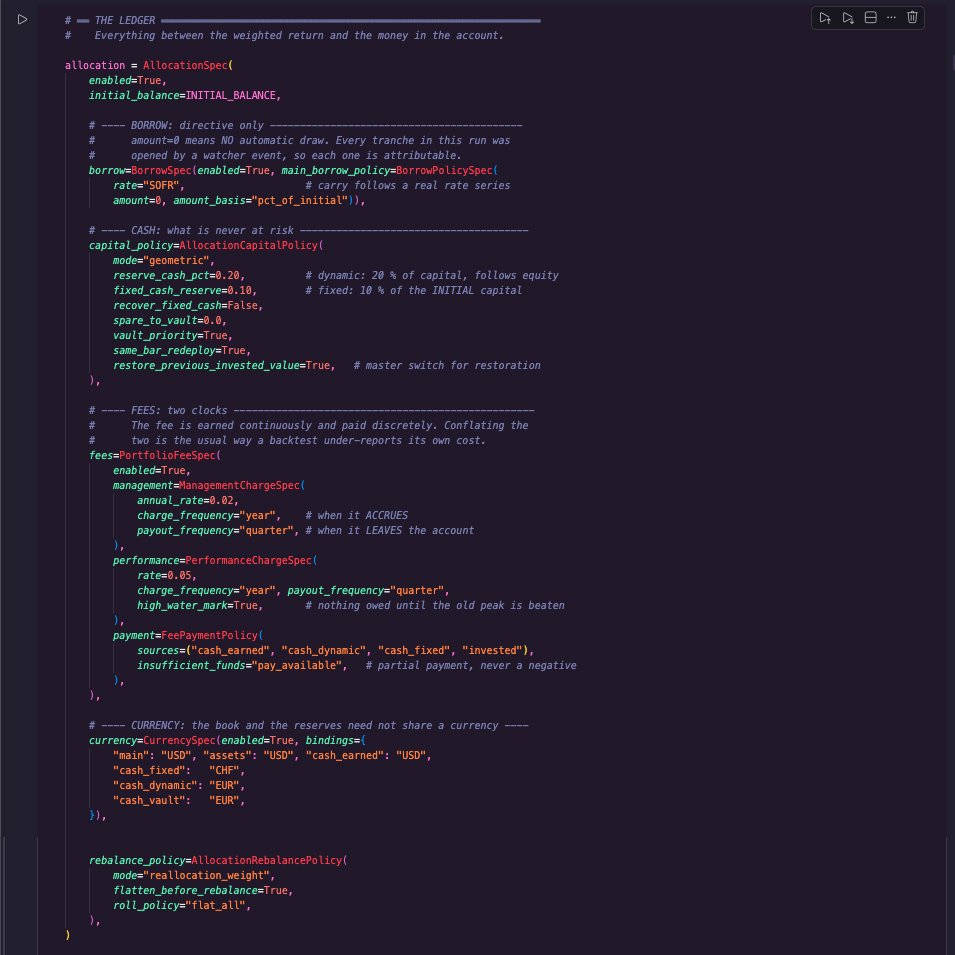
charge_frequency="year" est le
rythme auquel la commission se provisionne, payout_frequency="quarter"
celui auquel elle quitte le compte. Les confondre est la façon habituelle dont un
backtest sous-estime son propre coût.
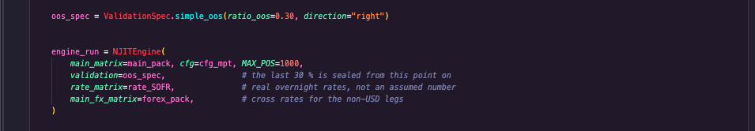
ValidationSpec.simple_oos(ratio_oos=0.30) met les 30 % de fin hors
d'atteinte pour tout ce qui suit. Le taux d'emprunt est une vraie série SOFR, et les
jambes non-dollar passent par des taux croisés.
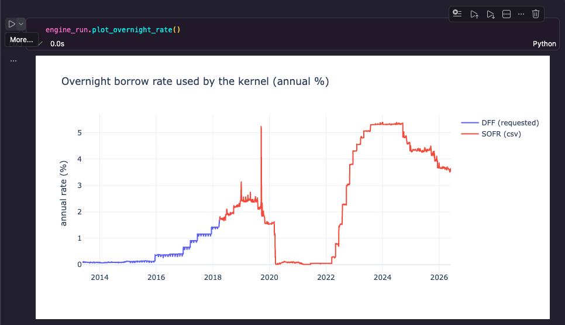
La stratégie décide toutes les cinquante barres. Un scanner compilé surveille le portefeuille chaque semaine et peut déclencher deux actions de nature différente selon l'événement rencontré.
Ce run n'est pas un balayage compilé d'un seul tenant, ce qui explique les
3,2 secondes. Le kernel s'arrête à chaque décision, rend la main à Python, puis
reprend. C'est ce que veut dire mode="resume" : l'état du portefeuille
traverse la frontière au lieu d'être recalculé depuis le début. Positions, trésorerie
par palier, frais provisionnés, tranches d'emprunt et high-water mark reviennent tels
quels de l'autre côté. Les 3,2 secondes sont donc le prix de 30 allers-retours avec un
registre qui survit, pas celui du calcul numérique. La version rapide consisterait à
garder la décision dans le kernel ; elle coûterait d'écrire chaque stratégie en numba.
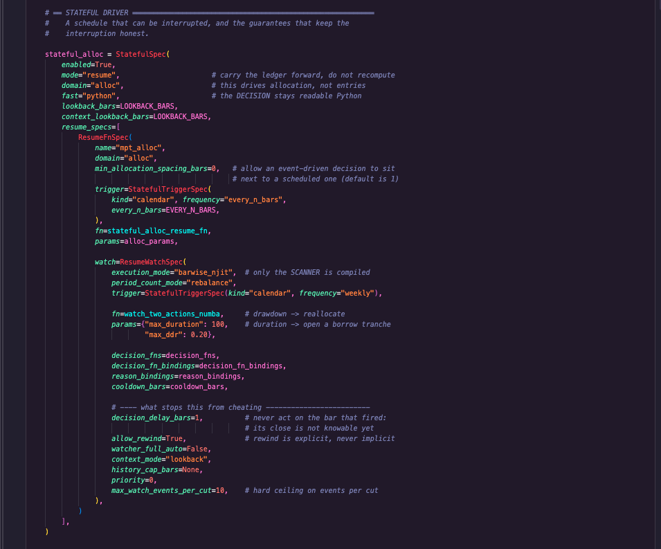
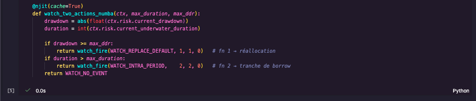
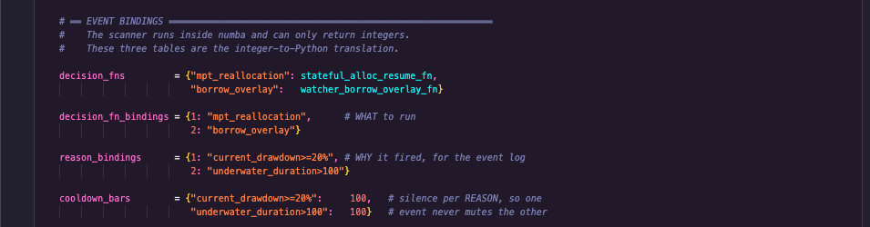
Le moteur tient le journal correspondant, une ligne par événement :
barre de déclenchement, barre de décision, fonction appelée, raison, statut
fired ou cooldown. C'est là que se vérifie le décalage d'une
barre entre l'événement et l'action.
Le moteur n'agit jamais sur la barre qui a déclenché. decision_delay_bars=1 : sa clôture n'est pas connaissable au moment du signal. Le journal d'événements le montre ligne par ligne.
Le rembobinage est explicite. allow_rewind est un choix déclaré, jamais un comportement implicite.
Le silence est compté par raison. Un drawdown qui se déclenche ne consomme pas le cooldown d'une durée sous l'eau.
Le budget d'actions est appliqué dans le scanner compilé. max_fires_per_period=1 : un budget épuisé ne coûte même pas de temps de calcul, et le levier ne peut pas s'emballer.
Le nombre d'événements par découpe est plafonné. max_watch_events_per_cut=10.
La politique principale ne tire rien automatiquement. Les onze tranches de ce run ont toutes été ouvertes par un événement du watcher, et chacune porte son ticket.
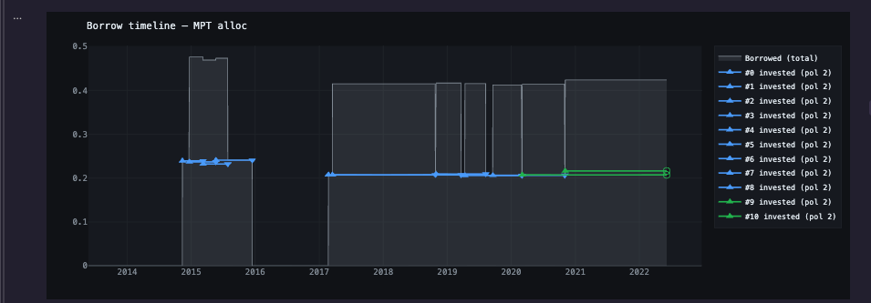
0,130121 d'intérêts payés. Toutes portent
policy_id 2 : le moteur déduplique les politiques par contenu, donc une
politique réutilisée reste un seul identifiant.
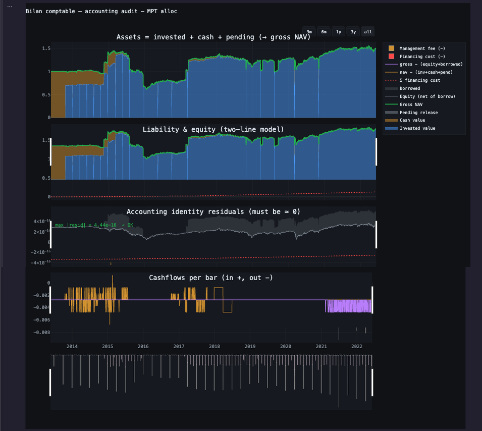
nav − (invested + cash + pending) et
gross − (equity + borrowed), qui doivent rester plats à zéro. Le maximum
atteint est 4,44 e−16. Sur un portefeuille de 100 000 €, cela fait un écart de
quatre milliardièmes de centime entre ce que le portefeuille possède et ce qu'il
doit. C'est le plus petit écart qu'un ordinateur sache encore représenter à cette
échelle : en dessous il n'y a plus de nombre, il y a zéro. Et c'est tenu sur 2 300
barres, avec emprunt, change, frais et watchers actifs. Ce panneau n'est jamais rééchantillonné
pour l'affichage : un pic d'une seule barre est exactement ce qu'il existe pour
attraper.
Les coûts d'exécution ne sont plus une déclaration sans effet dans le mode allocation. Spread, commission, taxe, impact résiduel et slippage sont rapprochés sur les jambes réellement exécutées ; le carry de contrat reste séparé du financement de l'emprunt. Sur ce run avec watcher, ils retirent ensemble 3 606,69, soit 3,6068 % du capital initial de 100 000.
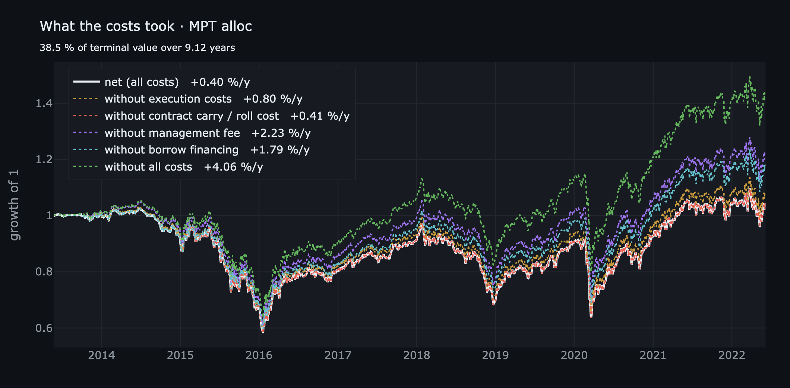
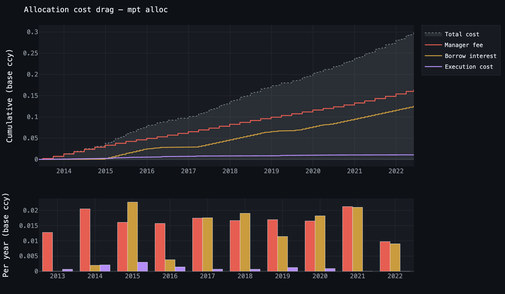
| Actif | Spread | Commission | Taxe | Impact résiduel | Slippage | Exécution | Carry / roll | Total | % capital | Carry pb/an | Slip fill pb A/R | Dates carry |
|---|---|---|---|---|---|---|---|---|---|---|---|---|
| BRENTCMDUSD | 134,52 | 134,52 | 0,00 | 53,61 | 807,00 | 1 129,65 | 0,00 | 1 129,65 | 1,1297 % | 0,0 | 26,981 | 0 |
| USA500IDXUSD | 54,24 | 325,44 | 0,00 | 97,21 | 341,33 | 818,22 | 0,00 | 818,22 | 0,8182 % | 0,0 | 12,281 | 0 |
| DEUIDXEUR | 32,36 | 97,08 | 0,00 | 20,83 | 601,39 | 751,66 | 0,00 | 751,66 | 0,7517 % | 0,0 | 16,424 | 0 |
| XAUUSD | 71,94 | 10,79 | 0,00 | 13,75 | 517,99 | 614,47 | 29,99 | 644,45 | 0,6445 % | 1,4 | 10,766 | 101 |
| GBPUSD | 21,51 | 8,07 | 0,00 | 0,96 | 232,18 | 262,71 | 0,00 | 262,71 | 0,2627 % | 0,0 | 6,557 | 0 |
| Portefeuille | 314,57 | 575,90 | 0,00 | 186,36 | 2 499,89 | 3 576,71 | 29,99 | 3 606,69 | 3,6068 % | s.o. | s.o. | 101 |
Le slippage est mesuré par l'écart entre prix cible et prix exécuté. Son effet est déjà dans la NAV : le tableau le rend visible sans le débiter une seconde fois. La page consacrée aux coûts publie la spec, le même rapprochement dans deux unités et la cascade qui réintègre chaque catégorie de coûts séparément sur une trajectoire fixe.
La configuration complète, la convention des contrats, le slippage et la lecture des deux graphiques sont détaillés séparément.
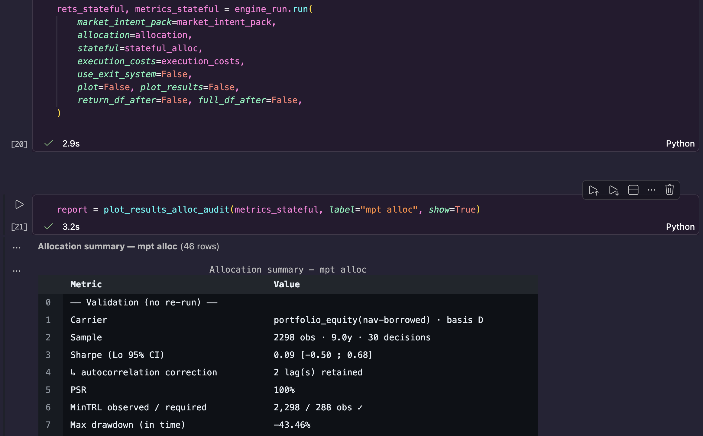
portfolio_equity(nav−borrowed). Le Sharpe
corrigé de l'autocorrélation vaut 0,09, avec un intervalle de Lo à 95 % de
[−0,50 ; 0,68].
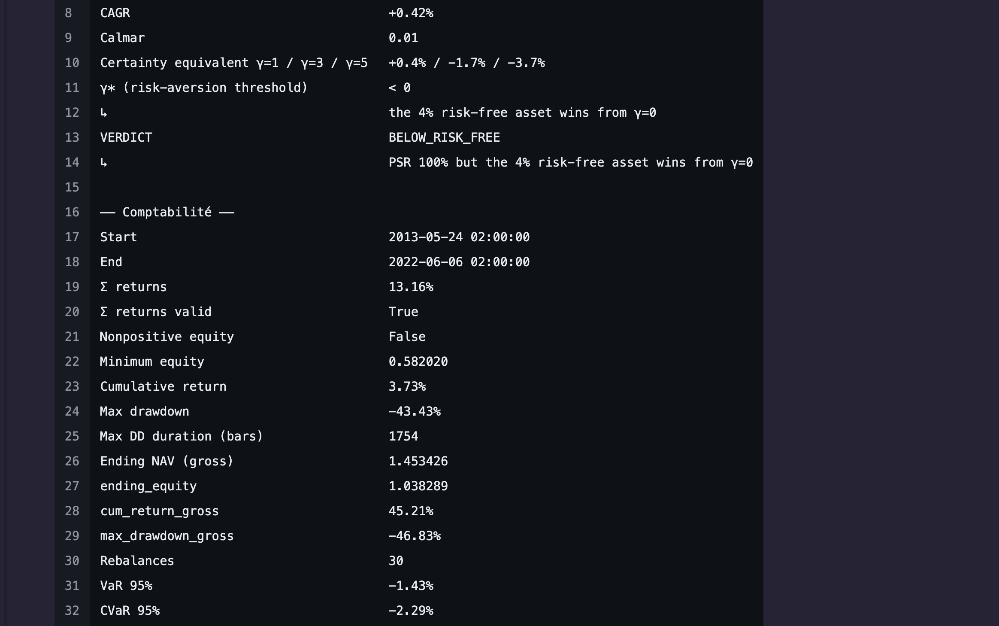
BELOW_RISK_FREE.
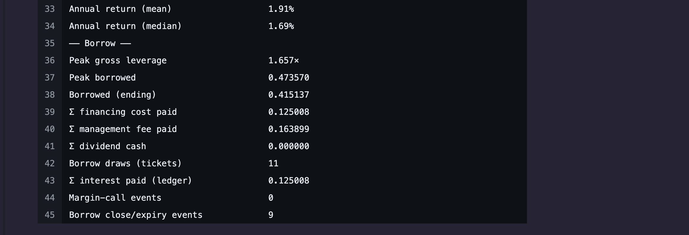
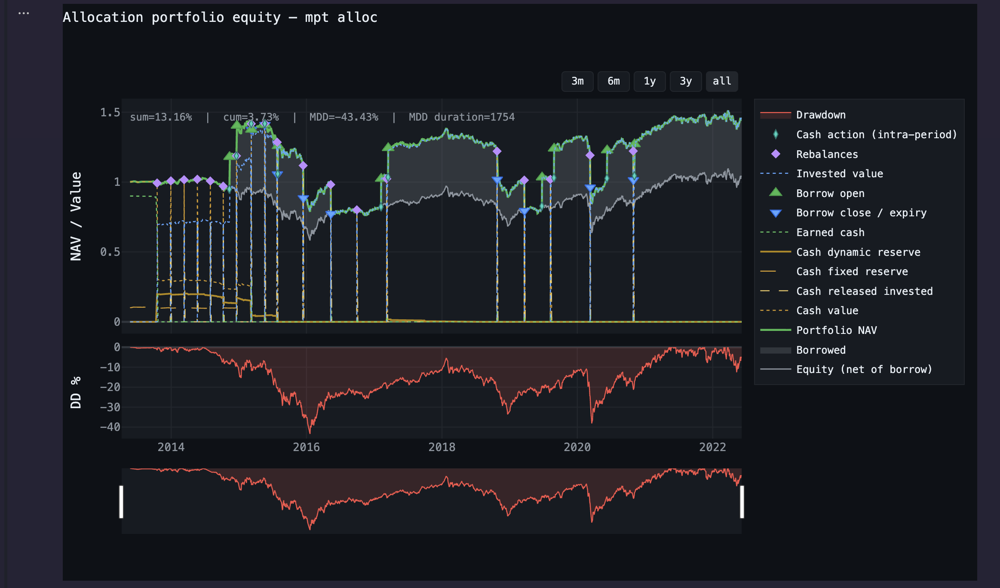
C'est la partie qui justifie tout ce qui précède. Une baseline construite dans un tableur ne paie ni frais ni devises : la comparer à une stratégie qui les paie fabrique un écart qui n'existe pas. Ici la baseline traverse le même kernel, le même registre de trésorerie et la même série de mesure. Seule la règle de pondération change, et l'écart mesuré est donc bien celui de la règle.
Les écarts sont en pt, points de pourcentage de rendement annualisé. C'est une soustraction entre deux taux : 1,94 % − 3,80 % = −1,86 pt. Ni un pourcentage relatif, ni une fraction du capital engagé. C'est un écart de vitesse, que la durée transforme en argent : sur neuf ans, ces −1,86 pt composent en 21 points de capital terminal.
Deux runs distincts, et il ne faut pas les confondre. Les sections 01 à 06 viennent du run avec emprunt et watcher : 30 décisions, drawdown maximal de 43,43 %. Les trois appels ci-dessous ont été passés sur un autre run, la même stratégie sans emprunt, sans watcher et sans spec de devises : 46 décisions, drawdown maximal de 24,76 %. Le registre de trésorerie et la série de mesure y sont les mêmes ; ce qui change, c'est qu'il n'y a plus de levier, d'interruption ni de conversion entre la règle de pondération et le résultat. C'est ce second run que documente la note de validation.
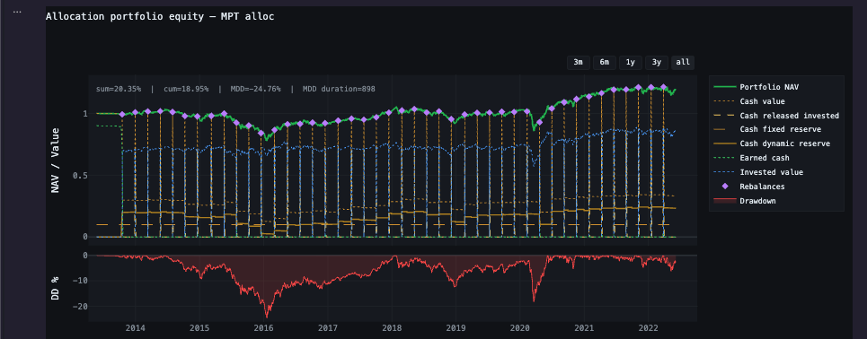
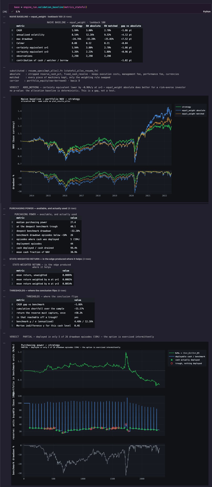
absolute retire les réserves,
matched garde toute la machinerie et ne change que la règle de
pondération. Verdict ADDS_NOTHING : l'équivalent certain est inférieur de
0,96 %/an à γ = 3. Le tableau THRESHOLDS dit ce qu'il aurait fallu pour
que la conclusion bascule, une réserve capturant +50,3 % en une fois, et répond que
c'est atteignable depuis un creux.
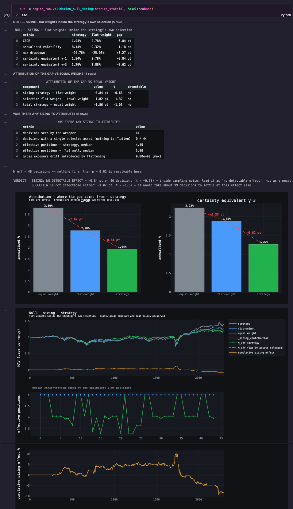
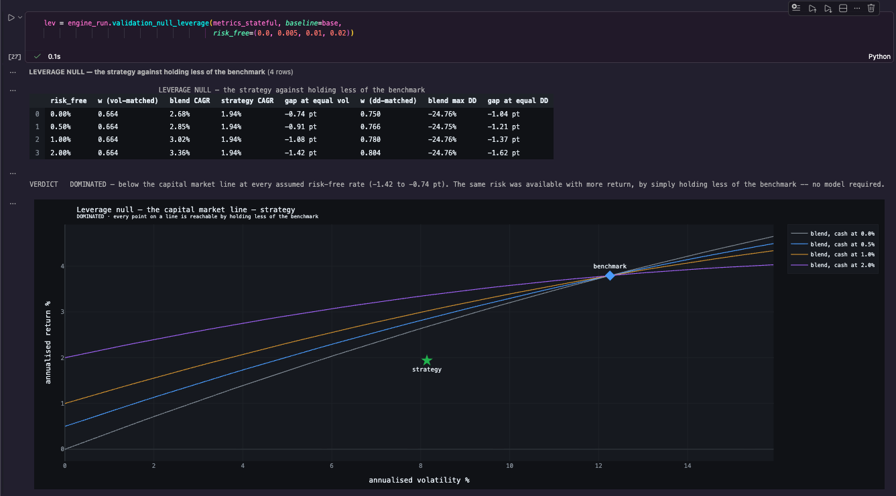
DOMINATED : le même risque était disponible avec plus de
rendement, par une division.
Ces trois verdicts, et l'énoncé de ce qu'ils ne permettent pas de conclure, sont publiés en détail sur le run sans emprunt ni watcher.
Publié. Le dépôt public est un instantané du moteur algorithmique tel qu'il était en avril 2026 : de quoi définir un signal, le faire tourner sous un modèle d'exécution réaliste, et inspecter les trades produits.
Non publié. Le moteur d'allocation et d'investissement qui a produit cette page est privé : le registre, la machinerie de trésorerie et d'emprunt, la provision des frais, la couche de devises, et la couche de validation. Il est couvert par 401 tests.
Les coûts d'exécution du mode allocation sont désormais débités par le kernel et rapprochés par actif. Leur effet mesuré sur ce run est publié en section 05 ; les hypothèses restent des paramètres de démonstration, pas les conditions d'un courtier.
This page shows what the tool costs to use: the real code that is written, and the real output it returns. Everything below comes from allocation mode, the one that runs a portfolio, its cash and its debt. Investment mode takes that accounting over; algorithmic mode only reaches it through the sizing layer. The engine ships with a validation layer, and an example of it in use appears further down.
A fixed and a dynamic cash reserve, borrowing indexed on a real market rate, fees that accrue on one clock and are paid on another, a performance fee with a high-water mark, and reserves that are not held in the book's currency. One declaration.
On currencies the count is worth stating, because the spec only shows three of
them. The CurrencySpec declares three: USD for the book and earned
cash, CHF for the fixed reserve, EUR for the dynamic reserve and the vault. The fourth
arrives through the book itself, one of whose five legs is GBP/USD. The
assets carry "USD" in the bindings because the book is expressed in base
currency; the non-dollar legs go through cross rates. Holding the reserves outside the
portfolio's currency is deliberate: their value then moves even when nothing is done,
which is the case a single-currency engine cannot represent.
charge_frequency="year" is the rhythm at
which the fee accrues, payout_frequency="quarter" the one at which it
leaves the account. Conflating them is the usual way a backtest under-reports its own
cost.
ValidationSpec.simple_oos(ratio_oos=0.30) puts the last 30 % out of reach
for everything that follows. The borrow rate is a real SOFR series, and the non-dollar
legs go through cross rates.
The strategy decides every fifty bars. A compiled scanner watches the portfolio weekly and can trigger two actions of different natures depending on the event it meets.
This run is not one compiled sweep, which is why it takes 3.2 seconds. The kernel
stops at every decision, hands control back to Python, then picks up again. That is what
mode="resume" means: portfolio state crosses the boundary instead of being
recomputed from the start. Positions, cash by tier, accrued fees, borrow tranches and the
high-water mark all come back untouched on the other side. So the 3.2 seconds are the
price of 30 round trips with a surviving ledger, not the price of the arithmetic. The
fast version would keep the decision inside the kernel; it would cost writing every
strategy in numba.
The engine keeps the matching log, one row per event: fire bar, decision bar, function
called, reason, and a fired or cooldown status. That is where
the one-bar delay between event and action is checked.
It never acts on the bar that fired. decision_delay_bars=1: that bar's close is not knowable at signal time. The event log shows it row by row.
Rewind is explicit. allow_rewind is a declared choice, never an implicit behaviour.
Silence is counted per reason. A drawdown that fires does not consume the cooldown of an underwater-duration event.
The action budget is enforced inside the compiled scanner. max_fires_per_period=1: an exhausted budget does not even cost compute, and leverage cannot run away.
Events per cut are capped. max_watch_events_per_cut=10.
The main policy draws nothing automatically. All eleven tranches in this run were opened by a watcher event, and each carries its own ticket.
0.130121 of interest paid. All of them carry policy_id 2: the
engine dedupes policies by content, so a reused policy stays a single id.
nav − (invested + cash + pending) and
gross − (equity + borrowed), both of which must sit flat on zero. The
worst value reached is 4.44 e−16. On a 100,000 € portfolio that is a gap of
four billionths of a cent between what the portfolio owns and what it owes. It is
the smallest gap a computer can still represent at this scale: below it there is no
number left, there is zero. And it holds over 2,300 bars, with borrowing, currency
conversion, fees and watchers active. This panel is never
resampled for display: a spike lasting one bar is exactly what it exists to catch.
Execution costs are no longer declarations without effect in allocation mode. Spread, commission, tax, residual impact and slippage are reconciled against the legs that were actually executed; contract carry remains separate from borrow financing. On this run with a watcher, they remove 3,606.69 in total, or 3.6068 % of the initial capital of 100,000.
| Asset | Spread | Commission | Tax | Residual impact | Slippage | Execution | Carry / roll | Total | % capital | Carry bp/y | Fill slip bp RT | Carry dates |
|---|---|---|---|---|---|---|---|---|---|---|---|---|
| BRENTCMDUSD | 134.52 | 134.52 | 0.00 | 53.61 | 807.00 | 1,129.65 | 0.00 | 1,129.65 | 1.1297 % | 0.0 | 26.981 | 0 |
| USA500IDXUSD | 54.24 | 325.44 | 0.00 | 97.21 | 341.33 | 818.22 | 0.00 | 818.22 | 0.8182 % | 0.0 | 12.281 | 0 |
| DEUIDXEUR | 32.36 | 97.08 | 0.00 | 20.83 | 601.39 | 751.66 | 0.00 | 751.66 | 0.7517 % | 0.0 | 16.424 | 0 |
| XAUUSD | 71.94 | 10.79 | 0.00 | 13.75 | 517.99 | 614.47 | 29.99 | 644.45 | 0.6445 % | 1.4 | 10.766 | 101 |
| GBPUSD | 21.51 | 8.07 | 0.00 | 0.96 | 232.18 | 262.71 | 0.00 | 262.71 | 0.2627 % | 0.0 | 6.557 | 0 |
| Portfolio | 314.57 | 575.90 | 0.00 | 186.36 | 2,499.89 | 3,576.71 | 29.99 | 3,606.69 | 3.6068 % | n/a | n/a | 101 |
Slippage is measured as the gap between target and execution price. Its effect is already in NAV: the table makes it visible without charging it twice. The dedicated French note publishes the specification, the reconciliation in two units, and the fixed-path cascade.
The full configuration, contract conventions, slippage and both charts are documented separately.
portfolio_equity(nav−borrowed). The
autocorrelation-corrected Sharpe is 0.09, with a 95 % Lo interval of [−0.50; 0.68].
BELOW_RISK_FREE.
This is the part that justifies everything above it. A baseline built in a spreadsheet pays neither fees nor currencies: comparing it to a strategy that does manufactures an edge that is not there. Here the baseline goes through the same kernel, the same cash ledger and the same performance carrier. Only the weighting rule changes, so the gap measured is the gap of the rule.
Gaps are stated in pt, percentage points of annualised return. It is a subtraction between two rates: 1.94 % − 3.80 % = −1.86 pt. Neither a relative percentage nor a fraction of the capital committed. It is a difference in speed, which duration turns into money: over nine years those −1.86 pt compound into 21 points of terminal capital.
Two separate runs, and they must not be conflated. Sections 01 to 06 come from the run with borrowing and a watcher: 30 decisions, 43.43 % maximum drawdown. The three calls below were made against a different run, the same strategy with no borrowing, no watcher and no currency spec: 46 decisions, 24.76 % maximum drawdown. The cash ledger and the performance carrier are the same there; what changes is that no leverage, no interruption and no translation sit between the weighting rule and the result. That second run is the one the validation note documents.
absolute strips the reserves, matched keeps every piece of
machinery and swaps only the weighting rule. Verdict ADDS_NOTHING: the
certainty equivalent is lower by 0.96 %/year at γ = 3. The THRESHOLDS
table states what it would have taken for the conclusion to flip, a reserve capturing
+50.3 % in one go, and answers that this is reachable off a trough.
DOMINATED: the same risk was available with more return, by a division.
Those three verdicts, and the statement of what they do not establish, are published in full against the run without borrowing and without a watcher.
Published. The public repository is a snapshot of the algorithmic engine as it stood in April 2026: enough to define a signal, run it under a realistic execution model, and inspect the resulting trades.
Not published. The allocation and investment engine behind this page is private: the ledger, the cash and borrowing machinery, fee accrual, the currency layer, and the validation layer. It is covered by 401 tests.
Allocation-mode execution costs are now debited by the kernel and reconciled by asset. Their measured effect on this run is published in section 05; the inputs remain demonstration parameters, not the terms of a specific broker.